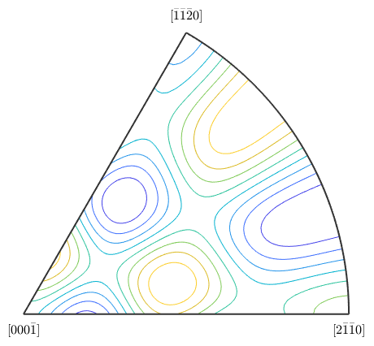

S2FunHarmonicSym
S2FunHarmonicSym is an extension of the S2FunHarmonic class which stores the symmetry with the function.
| On this page ... |
| Defining a S2FunHarmonic |
| Visualization |
| Complete Function list |
Defining a S2FunHarmonic
Definition via symmetrisation
The simplest way to define a S2FunHarmonicSym is through the symmetrisation of an ordinary S2FunHarmonic.
sF = S2Fun.smiley
cs = crystalSymmetry('432');
sFs1 = symmetrise(sF, cs);sF = S2FunHarmonic bandwidth: 128
- this symmetrises the function and gives back the result with the symmetry attached
plot(sFs1)

Definition via function handle
If you have a function handle for the function you could create a S2FunHarmonicSym via quadrature. At first lets define a symmetry and a function handle which takes vector3d as an argument and returns double:
f = @(v) 0.1*(v.theta+sin(8*v.x).*sin(8*v.y));
cs = crystalSymmetry('6/m');Now you can call the quadrature command to get sFs2 of type S2FunHarmonicSym
sFs2 = S2FunHarmonicSym.quadrature(f, cs)
sFs2 = S2FunHarmonic symmetry: 6/m, X||a*, Y||b, Z||c* bandwidth: 128 antipodal: true
Visualization
The plot commands for a S2FunHarmonicSym by default plot the function only on the fundamenta Sector of the symmetry. E.g. the default plot-command look as follows
plot(sFs1);

Another Example is the contour plot
contour(sFs2);
Complete Function list
| DocHelp 0.1 beta |